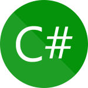

Paradigm Structured, imperative, object-oriented, event-driven, task-driven, functional, generic, reflective, concurrent

Family C
Designed by Microsoft
Developer Microsoft
First appeared 2000; 19 years ago
Stable release
8.0[2] / September 23, 2019; 16 days ago
Typing discipline static, dynamic, strong, safe, nominative, partially inferred
Platform Common Language Infrastructure
License Roslyn compiler: Apache License 2.0
.NET Core CLR: MIT/X11
Mono compiler: dual GPLv3 and MIT/X11
DotGNU: dual GPL and LGPL
Filename extensions .cs
Website csharp.net
Major implementations
Visual C#, .NET Framework, Mono, .NET Core, DotGNU (discontinued), Universal Windows Platform
Dialects
Cω, Spec#, Polyphonic C#, Enhanced C#
Influenced by
C++, Cω, Eiffel, F#, Haskell, Icon, J#, J++, Java, ML, Modula-3, Object Pascal, Rust, VB
Influenced
Chapel, Clojure, Crystal, D, J#, Dart, F#, Hack, Java, Kotlin, Nemerle, Oxygene, Ring,] Rust, Swift, Vala, TypeScript
C Sharp Programming at Wikibooks
C# (pronounced see sharp, like the musical note C♯, but written with the number sign) is a general-purpose, multi-paradigm programming language encompassing strong typing, lexically scoped, imperative, declarative, functional, generic, object-oriented (class-based), and component-oriented programming disciplines. It was developed around 2000 by Microsoft as part of its .NET initiative, and later approved as an international standard by Ecma (ECMA-334) and ISO (ISO/IEC 23270:2018). Mono is the name of the free and open-source project to develop a compiler and runtime for the language. C# is one of the programming languages designed for the Common Language Infrastructure (CLI).
C# was designed by Anders Hejlsberg, and its development team is currently led by Mads Torgersen. The most recent version is 8.0, which was released in 2019 alongside Visual Studio 2019 version 16.3.
During the development of the .NET Framework, the class libraries were originally written using a managed code compiler system called "Simple Managed C" (SMC). In January 1999, Anders Hejlsberg formed a team to build a new language at the time called Cool, which stood for "C-like Object Oriented Language". Microsoft had considered keeping the name "Cool" as the final name of the language, but chose not to do so for trademark reasons. By the time the .NET project was publicly announced at the July 2000 Professional Developers Conference, the language had been renamed C#, and the class libraries and ASP.NET runtime had been ported to C#.
Hejlsberg is C#'s principal designer and lead architect at Microsoft, and was previously involved with the design of Turbo Pascal, Embarcadero Delphi (formerly CodeGear Delphi, Inprise Delphi and Borland Delphi), and Visual J++. In interviews and technical papers he has stated that flaws in most major programming languages (e.g. C++, Java, Delphi, and Smalltalk) drove the fundamentals of the Common Language Runtime (CLR), which, in turn, drove the design of the C# language itself.
James Gosling, who created the Java programming language in 1994, and Bill Joy, a co-founder of Sun Microsystems, the originator of Java, called C# an "imitation" of Java; Gosling further said that "[C# is] sort of Java with reliability, productivity and security deleted." Klaus Kreft and Angelika Langer (authors of a C++ streams book) stated in a blog post that "Java and C# are almost identical programming languages. Boring repetition that lacks innovation," "Hardly anybody will claim that Java or C# are revolutionary programming languages that changed the way we write programs," and "C# borrowed a lot from Java - and vice versa. Now that C# supports boxing and unboxing, we'll have a very similar feature in Java." In July 2000, Hejlsberg said that C# is "not a Java clone" and is "much closer to C++" in its design.
Since the release of C# 2.0 in November 2005, the C# and Java languages have evolved on increasingly divergent trajectories, becoming two very different languages. One of the first major departures came with the addition of generics to both languages, with vastly different implementations. C# makes use of reification to provide "first-class" generic objects that can be used like any other class, with code generation performed at class-load time. Furthermore, C# has added several major features to accommodate functional-style programming, culminating in the LINQ extensions released with C# 3.0 and its supporting framework of lambda expressions, extension methods, and anonymous types. These features enable C# programmers to use functional programming techniques, such as closures, when it is advantageous to their application. The LINQ extensions and the functional imports help developers reduce the amount of boilerplate code that is included in common tasks like querying a database, parsing an xml file, or searching through a data structure, shifting the emphasis onto the actual program logic to help improve readability and maintainability.
C# used to have a mascot called Andy (named after Anders Hejlsberg). It was retired on January 29, 2004.
C# was originally submitted to the ISO subcommittee JTC 1/SC 22 for review, under ISO/IEC 23270:2003, was withdrawn and was then approved under ISO/IEC 23270:2006.
Name
Microsoft first used the name C# in 1988 for a variant of the C language designed for incremental compilation. That project was not completed but the name lives on.
C-sharp musical note
The name "C sharp" was inspired by the musical notation where a sharp indicates that the written note should be made a semitone higher in pitch. This is similar to the language name of C++, where "++" indicates that a variable should be incremented by 1 after being evaluated. The sharp symbol also resembles a ligature of four "+" symbols (in a two-by-two grid), further implying that the language is an increment of C++.
Due to technical limitations of display (standard fonts, browsers, etc.) and the fact that the sharp symbol (U+266F ♯ music sharp sign (HTML ♯)) is not present on most keyboard layouts, the number sign (U+0023 # number sign (HTML #)) was chosen to approximate the sharp symbol in the written name of the programming language. This convention is reflected in the ECMA-334 C# Language Specification.
The "sharp" suffix has been used by a number of other .NET languages that are variants of existing languages, including J# (a .NET language also designed by Microsoft that is derived from Java 1.1), A# (from Ada), and the functional programming language F#. The original implementation of Eiffel for .NET was called Eiffel#, a name retired since the full Eiffel language is now supported. The suffix has also been used for libraries, such as Gtk# (a .NET wrapper for GTK+ and other GNOME libraries) and Cocoa# (a wrapper for Cocoa).